%%{init: { 'logLevel': 'debug' } }%%
graph TD
A[Satellite Image<br/>H x W x C] --> B[Spatial Tiling<br/>Divide into regions]
B --> C[Patch Extraction<br/>Fixed-size windows]
C --> D[Patch Flattening<br/>3D to 1D vectors]
D --> E[Linear Projection<br/>To embedding space]
E --> F[Add Positional Encoding<br/>Spatial awareness]
F --> G[Token Sequence<br/>Ready for Transformer]
style A fill:#e1f5fe
style G fill:#f3e5f5
Introduction: Why Patches Matter in Geospatial AI
When working with satellite imagery and geospatial foundation models (GFMs), one of the most critical preprocessing steps is patch extraction — the process of dividing large satellite images into smaller, manageable pieces that can be fed into neural networks. This isn’t just a technical necessity; it’s a fundamental design choice that affects everything from computational efficiency to model performance.
The Scale Challenge in Remote Sensing
Satellite images present unique challenges compared to natural images used in computer vision:
- Massive dimensions: A single Landsat scene covers 185×185 kilometers at 30m resolution, resulting in images with dimensions of approximately 6,000×6,000 pixels per band
- Multi-spectral complexity: Satellite imagery often contains 7-13 spectral bands (compared to 3 RGB channels in natural images)
- Memory constraints: Loading a full Sentinel-2 scene (10,980×10,980 pixels × 13 bands) would require over 6GB of RAM as float32 arrays
- Computational limits: Most GPUs cannot process such large images in a single forward pass
How Vision Transformers Process Images
Vision Transformers (ViTs), the architecture underlying most geospatial foundation models, don’t process images as continuous arrays like Convolutional Neural Networks (CNNs). Instead, they:
- Divide images into fixed-size patches (typically 8×8, 16×16, or 32×32 pixels)
- Flatten each patch into a 1D vector (e.g., a 16×16×3 patch becomes a 768-element vector)
- Apply linear projection to transform patch vectors into embedding space
- Add positional encodings so the model knows where each patch came from spatially
- Process patches as a sequence using self-attention mechanisms
This patch-based approach is why understanding patch extraction is crucial for working with GFMs — the quality of your patches directly impacts model performance.
Fundamental Concepts: From Images to Tokens
The Patch Extraction Pipeline
Let’s work through this pipeline step by step using real examples.
Step 1: Understanding Image Dimensions and Memory
First, let’s examine what we’re working with when we load satellite imagery and why patches are necessary.
import numpy as np
import matplotlib.pyplot as plt
# Simulate dimensions of common satellite image types
satellite_scenarios = {
'Landsat-8 Scene': {'height': 7611, 'width': 7791, 'bands': 11, 'pixel_size': 30},
'Sentinel-2 Tile': {'height': 10980, 'width': 10980, 'bands': 13, 'pixel_size': 10},
'MODIS Daily': {'height': 1200, 'width': 1200, 'bands': 36, 'pixel_size': 500},
'High-res Drone': {'height': 20000, 'width': 20000, 'bands': 3, 'pixel_size': 0.1}
}
print("Memory Requirements for Full Images (as float32):")
print("="*60)
for name, specs in satellite_scenarios.items():
# Calculate total pixels
total_pixels = specs['height'] * specs['width'] * specs['bands']
# Memory in bytes (float32 = 4 bytes per value)
memory_bytes = total_pixels * 4
memory_gb = memory_bytes / (1024**3)
# Coverage area
area_m2 = (specs['height'] * specs['pixel_size']) * (specs['width'] * specs['pixel_size'])
area_km2 = area_m2 / (1000**2)
print(f"{name:20} | {specs['height']:5}×{specs['width']:5}×{specs['bands']:2} | {memory_gb:5.2f} GB | {area_km2:8.1f} km²")
print("\n💡 Key Insight: Even 'small' satellite images require gigabytes of memory!")
print(" Most GPUs have 8-24GB VRAM, so we must process images in smaller pieces.")Memory Requirements for Full Images (as float32):
============================================================
Landsat-8 Scene | 7611× 7791×11 | 2.43 GB | 53367.6 km²
Sentinel-2 Tile | 10980×10980×13 | 5.84 GB | 12056.0 km²
MODIS Daily | 1200× 1200×36 | 0.19 GB | 360000.0 km²
High-res Drone | 20000×20000× 3 | 4.47 GB | 4.0 km²
💡 Key Insight: Even 'small' satellite images require gigabytes of memory!
Most GPUs have 8-24GB VRAM, so we must process images in smaller pieces.This memory constraint is the primary practical reason for patch extraction, but there are also theoretical advantages:
- Spatial attention: Transformers can learn relationships between different spatial regions
- Scale invariance: Models trained on patches can potentially handle images of any size
- Data augmentation: Each patch can be augmented independently, increasing training diversity
Step 2: Basic Patch Extraction Mechanics
Let’s start with a simple example to understand the mechanics. We’ll create a synthetic satellite-like image and show how patches are extracted:
# Create a synthetic multi-spectral "satellite" image with realistic structure
np.random.seed(42)
# Simulate different land cover types with distinct spectral signatures
height, width = 120, 180
bands = 4 # Red, Green, Blue, NIR (Near-Infrared)
# Initialize image array
satellite_img = np.zeros((height, width, bands))
# Create realistic land cover patterns
# Forest areas (low red, moderate green, low blue, high NIR)
forest_mask = np.random.random((height, width)) < 0.3
satellite_img[forest_mask] = [0.1, 0.4, 0.1, 0.8]
# Agricultural fields (moderate red, high green, low blue, very high NIR)
ag_mask = (~forest_mask) & (np.random.random((height, width)) < 0.4)
satellite_img[ag_mask] = [0.3, 0.6, 0.2, 0.9]
# Urban areas (moderate all visible, low NIR)
urban_mask = (~forest_mask) & (~ag_mask) & (np.random.random((height, width)) < 0.5)
satellite_img[urban_mask] = [0.4, 0.4, 0.4, 0.2]
# Water bodies (low red, low green, moderate blue, very low NIR)
water_mask = (~forest_mask) & (~ag_mask) & (~urban_mask)
satellite_img[water_mask] = [0.1, 0.2, 0.5, 0.1]
# Add some noise to make it more realistic
satellite_img += np.random.normal(0, 0.02, satellite_img.shape)
satellite_img = np.clip(satellite_img, 0, 1)
# Visualize using false color composite (NIR-Red-Green)
fig, (ax1, ax2) = plt.subplots(1, 2, figsize=(12, 5))
# True color (RGB)
ax1.imshow(satellite_img[:, :, [0, 1, 2]]) # Red, Green, Blue
ax1.set_title('True Color Composite (RGB)')
ax1.set_xticks([])
ax1.set_yticks([])
# False color (NIR-Red-Green) - vegetation appears red
false_color = satellite_img[:, :, [3, 0, 1]] # NIR, Red, Green
ax2.imshow(false_color)
ax2.set_title('False Color Composite (NIR-R-G)')
ax2.set_xticks([])
ax2.set_yticks([])
plt.suptitle(f'Synthetic Satellite Image: {height}×{width}×{bands}', fontsize=14, y=1.02)
plt.tight_layout()
plt.show()
print(f"Image shape: {satellite_img.shape}")
print(f"Memory usage: {satellite_img.nbytes / (1024**2):.2f} MB")
print(f"Spectral bands: Red, Green, Blue, Near-Infrared")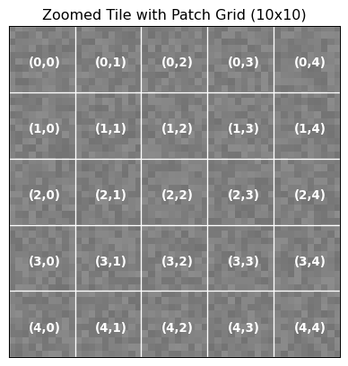
Image shape: (120, 180, 4)
Memory usage: 0.66 MB
Spectral bands: Red, Green, Blue, Near-InfraredNow let’s extract patches from this image and understand what happens at each step:
def extract_patches_with_visualization(image, patch_size, stride=None):
"""
Extract patches from a multi-spectral image and visualize the process.
Args:
image: numpy array of shape (H, W, C)
patch_size: int, size of square patches
stride: int, step size between patches (defaults to patch_size for non-overlapping)
Returns:
patches: array of shape (n_patches, patch_size, patch_size, C)
patch_positions: list of (x, y) coordinates for each patch
"""
if stride is None:
stride = patch_size
H, W, C = image.shape
patches = []
patch_positions = []
# Calculate how many patches fit
n_patches_y = (H - patch_size) // stride + 1
n_patches_x = (W - patch_size) // stride + 1
# Extract patches
for i in range(n_patches_y):
for j in range(n_patches_x):
y = i * stride
x = j * stride
# Ensure patch doesn't exceed image boundaries
if y + patch_size <= H and x + patch_size <= W:
patch = image[y:y+patch_size, x:x+patch_size, :]
patches.append(patch)
patch_positions.append((x, y))
return np.array(patches), patch_positions
# Extract patches
patch_size = 30
stride = 30 # Non-overlapping patches
patches, positions = extract_patches_with_visualization(satellite_img, patch_size, stride)
print(f"Original image: {satellite_img.shape}")
print(f"Patch size: {patch_size}×{patch_size}")
print(f"Stride: {stride} (overlap: {patch_size-stride} pixels)")
print(f"Patches extracted: {patches.shape[0]}")
print(f"Patch array shape: {patches.shape}")
print(f"Memory per patch: {patches[0].nbytes / 1024:.2f} KB")
print(f"Total patch memory: {patches.nbytes / (1024**2):.2f} MB")Original image: (120, 180, 4)
Patch size: 30×30
Stride: 30 (overlap: 0 pixels)
Patches extracted: 24
Patch array shape: (24, 30, 30, 4)
Memory per patch: 28.12 KB
Total patch memory: 0.66 MBVisualizing the Patch Grid
Understanding where patches come from spatially is crucial for interpreting model outputs later:
# Visualize patch extraction grid on the original image
fig, ax = plt.subplots(figsize=(10, 7))
# Show the false color composite as background
ax.imshow(satellite_img[:, :, [3, 0, 1]]) # NIR-Red-Green
# Draw patch boundaries
for i, (x, y) in enumerate(positions):
# Draw patch boundary
rect = plt.Rectangle((x-0.5, y-0.5), patch_size, patch_size,
linewidth=2, edgecolor='white', facecolor='none', alpha=0.8)
ax.add_patch(rect)
# Label first few patches to show indexing
if i < 9: # Only label first 9 patches to avoid clutter
center_x, center_y = x + patch_size//2, y + patch_size//2
ax.text(center_x, center_y, str(i), ha='center', va='center',
fontsize=10, color='yellow', weight='bold',
bbox=dict(boxstyle="round,pad=0.3", facecolor='black', alpha=0.7))
ax.set_xlim(0, satellite_img.shape[1])
ax.set_ylim(satellite_img.shape[0], 0)
ax.set_xticks([])
ax.set_yticks([])
ax.set_title(f'Patch Extraction Grid: {patch_size}×{patch_size} patches, stride={stride}', fontsize=14)
plt.tight_layout()
plt.show()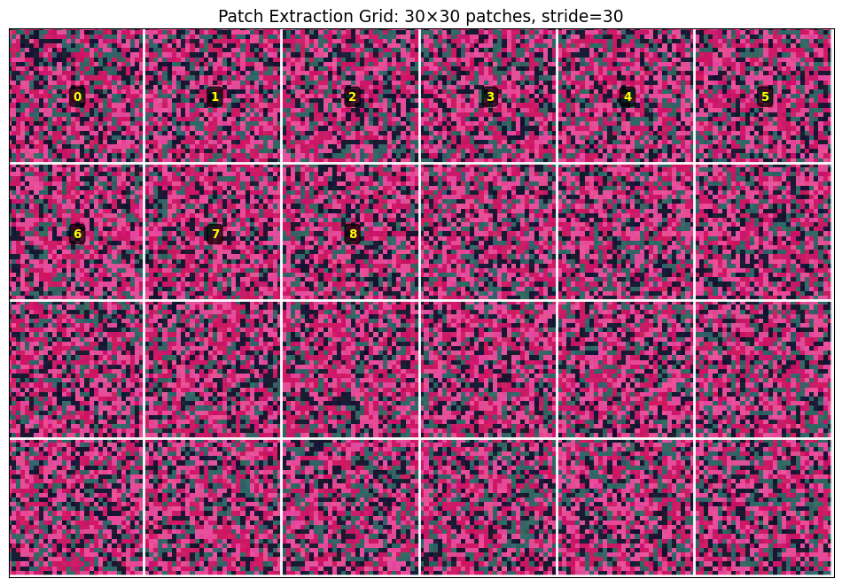
Step 3: From Patches to Tokens
Now let’s demonstrate how these patches become the input tokens that Vision Transformers process:
def patches_to_tokens_demo(patches, embed_dim=256):
"""
Demonstrate the conversion from image patches to transformer tokens.
This simulates what happens inside a Vision Transformer.
"""
n_patches, patch_h, patch_w, channels = patches.shape
# Step 1: Flatten each patch into a 1D vector
# This is what ViTs do: treat each patch as a "word" in a sequence
flattened_patches = patches.reshape(n_patches, patch_h * patch_w * channels)
print("Token Creation Process:")
print("="*40)
print(f"1. Input patches shape: {patches.shape}")
print(f" - {n_patches} patches")
print(f" - Each patch: {patch_h}×{patch_w}×{channels} = {patch_h*patch_w*channels} values")
print(f"2. Flattened patches: {flattened_patches.shape}")
print(f" - Each patch becomes a {flattened_patches.shape[1]}-dimensional vector")
# Step 2: Linear projection to embedding space (simplified simulation)
# In real ViTs, this is a learnable linear layer: nn.Linear(patch_dim, embed_dim)
np.random.seed(42) # For reproducible "projection"
projection_matrix = np.random.randn(flattened_patches.shape[1], embed_dim) * 0.1
token_embeddings = flattened_patches @ projection_matrix
print(f"3. Linear projection to embeddings: {token_embeddings.shape}")
print(f" - Each token now has {embed_dim} dimensions")
print(f" - These embeddings will be processed by transformer layers")
# Step 3: Add positional encodings (simplified)
# This tells the model where each patch came from spatially
positions_2d = np.array([(i % int(np.sqrt(n_patches)), i // int(np.sqrt(n_patches)))
for i in range(n_patches)])
print(f"4. Spatial positions: {positions_2d.shape}")
print(f" - Each token gets x,y coordinates of its source patch")
print(f" - This preserves spatial relationships")
return token_embeddings, positions_2d
# Convert our extracted patches to tokens
token_embeddings, spatial_positions = patches_to_tokens_demo(patches)
# Visualize token statistics
fig, (ax1, ax2) = plt.subplots(1, 2, figsize=(12, 5))
# Distribution of token embedding values
ax1.hist(token_embeddings.flatten(), bins=50, alpha=0.7, color='skyblue', edgecolor='black')
ax1.set_xlabel('Embedding Value')
ax1.set_ylabel('Frequency')
ax1.set_title('Distribution of Token Embedding Values')
ax1.grid(True, alpha=0.3)
# Show spatial positions
ax2.scatter(spatial_positions[:, 0], spatial_positions[:, 1],
c=range(len(spatial_positions)), cmap='viridis', s=100)
ax2.set_xlabel('Patch X Position')
ax2.set_ylabel('Patch Y Position')
ax2.set_title('Spatial Positions of Tokens')
ax2.grid(True, alpha=0.3)
for i, (x, y) in enumerate(spatial_positions[:9]): # Label first 9
ax2.annotate(str(i), (x, y), xytext=(5, 5), textcoords='offset points', fontsize=8)
plt.tight_layout()
plt.show()Token Creation Process:
========================================
1. Input patches shape: (24, 30, 30, 4)
- 24 patches
- Each patch: 30×30×4 = 3600 values
2. Flattened patches: (24, 3600)
- Each patch becomes a 3600-dimensional vector
3. Linear projection to embeddings: (24, 256)
- Each token now has 256 dimensions
- These embeddings will be processed by transformer layers
4. Spatial positions: (24, 2)
- Each token gets x,y coordinates of its source patch
- This preserves spatial relationships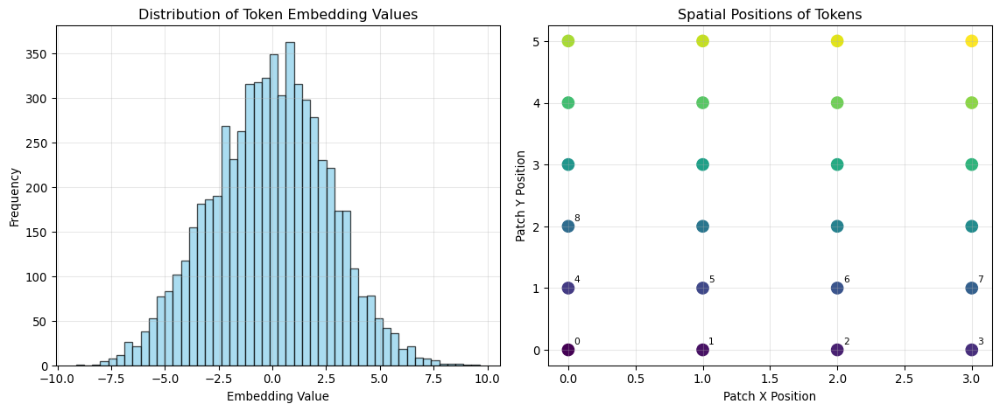
Real-World Considerations: Memory, Computation, and Scale
Computational Requirements Analysis
Before diving into advanced techniques, let’s understand the computational trade-offs involved in different patch extraction strategies:
def analyze_computational_requirements():
"""
Analyze memory and computational requirements for different patch strategies
with real satellite imagery scenarios.
"""
# Common GFM patch sizes used in literature
patch_sizes = [8, 16, 32, 64]
# Realistic satellite image scenarios
scenarios = {
'Sentinel-2 10m': {'height': 10980, 'width': 10980, 'bands': 4}, # RGB + NIR
'Landsat-8': {'height': 7791, 'width': 7611, 'bands': 7}, # Selected bands
'MODIS 250m': {'height': 4800, 'width': 4800, 'bands': 2}, # Red + NIR
'Drone RGB': {'height': 8000, 'width': 8000, 'bands': 3} # High-res RGB
}
print("Computational Analysis: Patches per Image")
print("="*80)
print(f"{'Scenario':15} {'Image Size':12} {'Patch':5} {'Patches':8} {'Memory/Batch':12} {'GPU Batches':10}")
print("-"*80)
for scenario_name, specs in scenarios.items():
h, w, c = specs['height'], specs['width'], specs['bands']
for patch_size in patch_sizes:
# Calculate non-overlapping patches
patches_y = h // patch_size
patches_x = w // patch_size
total_patches = patches_y * patches_x
# Memory per patch in MB (float32)
patch_memory_mb = (patch_size * patch_size * c * 4) / (1024**2)
# Typical GPU memory limit (assume 16GB for analysis)
gpu_memory_gb = 16
# Reserve 4GB for model weights and intermediate activations
available_memory_gb = gpu_memory_gb - 4
available_memory_mb = available_memory_gb * 1024
# Maximum patches per batch
max_batch_size = int(available_memory_mb / patch_memory_mb)
# How many GPU batches needed to process full image
batches_needed = (total_patches + max_batch_size - 1) // max_batch_size
print(f"{scenario_name:15} {h:4}×{w:4} {patch_size:3} {total_patches:8,} "
f"{patch_memory_mb:7.2f} MB {batches_needed:8}")
analyze_computational_requirements()
print("\n💡 Key Insights:")
print(" • Smaller patches = more patches = more GPU batches needed")
print(" • Larger patches = fewer patches but higher memory per patch")
print(" • Most real scenarios require multiple GPU batches for inference")
print(" • Memory-compute trade-off is crucial for deployment planning")Computational Analysis: Patches per Image
================================================================================
Scenario Image Size Patch Patches Memory/Batch GPU Batches
--------------------------------------------------------------------------------
Sentinel-2 10m 10980×10980 8 1,882,384 0.00 MB 1
Sentinel-2 10m 10980×10980 16 470,596 0.00 MB 1
Sentinel-2 10m 10980×10980 32 117,649 0.02 MB 1
Sentinel-2 10m 10980×10980 64 29,241 0.06 MB 1
Landsat-8 7791×7611 8 925,323 0.00 MB 1
Landsat-8 7791×7611 16 230,850 0.01 MB 1
Landsat-8 7791×7611 32 57,591 0.03 MB 1
Landsat-8 7791×7611 64 14,278 0.11 MB 1
MODIS 250m 4800×4800 8 360,000 0.00 MB 1
MODIS 250m 4800×4800 16 90,000 0.00 MB 1
MODIS 250m 4800×4800 32 22,500 0.01 MB 1
MODIS 250m 4800×4800 64 5,625 0.03 MB 1
Drone RGB 8000×8000 8 1,000,000 0.00 MB 1
Drone RGB 8000×8000 16 250,000 0.00 MB 1
Drone RGB 8000×8000 32 62,500 0.01 MB 1
Drone RGB 8000×8000 64 15,625 0.05 MB 1
💡 Key Insights:
• Smaller patches = more patches = more GPU batches needed
• Larger patches = fewer patches but higher memory per patch
• Most real scenarios require multiple GPU batches for inference
• Memory-compute trade-off is crucial for deployment planningOverlapping Patches: Information vs. Computation Trade-offs
Many GFMs use overlapping patches to capture more spatial context and improve boundary handling. Let’s explore this trade-off:
def demonstrate_overlap_effects(image, patch_size=32):
"""
Show how different stride values affect patch overlap and information coverage.
"""
stride_values = [32, 16, 8] # 0%, 50%, 75% overlap
overlap_percentages = [0, 50, 75]
fig, axes = plt.subplots(1, 3, figsize=(15, 5))
for idx, (stride, overlap_pct) in enumerate(zip(stride_values, overlap_percentages)):
ax = axes[idx]
# Extract patches with this stride
patches, positions = extract_patches_with_visualization(image, patch_size, stride)
# Show image background
ax.imshow(image[:, :, [3, 0, 1]]) # False color
# Draw patch boundaries with different colors to show overlap
colors = ['red', 'blue', 'green', 'orange', 'purple', 'cyan']
for i, (x, y) in enumerate(positions[:18]): # Show first 18 patches
color = colors[i % len(colors)]
rect = plt.Rectangle((x-0.5, y-0.5), patch_size, patch_size,
linewidth=2, edgecolor=color, facecolor=color,
alpha=0.2)
ax.add_patch(rect)
ax.set_xlim(0, image.shape[1])
ax.set_ylim(image.shape[0], 0)
ax.set_xticks([])
ax.set_yticks([])
ax.set_title(f'{overlap_pct}% Overlap\nStride={stride}, {len(positions)} patches')
plt.suptitle(f'Effect of Patch Overlap (patch size = {patch_size})', fontsize=14)
plt.tight_layout()
plt.show()
# Quantitative analysis
print("Overlap Analysis:")
print("="*50)
for stride, overlap_pct in zip(stride_values, overlap_percentages):
patches, _ = extract_patches_with_visualization(image, patch_size, stride)
memory_mb = patches.nbytes / (1024**2)
print(f"Overlap {overlap_pct:2}%: {len(patches):3} patches, {memory_mb:5.1f} MB")
demonstrate_overlap_effects(satellite_img)
print("\n💡 Overlap Trade-offs:")
print(" • More overlap = better spatial context + boundary handling")
print(" • More overlap = more patches = higher computational cost")
print(" • Optimal overlap depends on your specific task requirements")
print(" • Change detection often benefits from overlap")
print(" • Classification tasks may not need much overlap")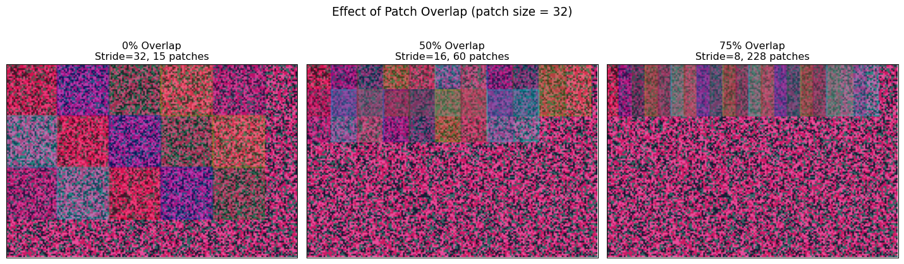
Overlap Analysis:
==================================================
Overlap 0%: 15 patches, 0.5 MB
Overlap 50%: 60 patches, 1.9 MB
Overlap 75%: 228 patches, 7.1 MB
💡 Overlap Trade-offs:
• More overlap = better spatial context + boundary handling
• More overlap = more patches = higher computational cost
• Optimal overlap depends on your specific task requirements
• Change detection often benefits from overlap
• Classification tasks may not need much overlapHandling Edge Cases: Padding Strategies for Real-World Data
When working with satellite imagery, images rarely divide evenly into patches. Different padding strategies offer different trade-offs between information preservation, computational efficiency, and model performance.
The Edge Problem
Let’s create a realistic scenario where image dimensions don’t divide evenly by patch size:
# Create a satellite image with dimensions that don't divide evenly
np.random.seed(42)
irregular_img = np.random.rand(155, 237, 4) # Irregular dimensions
irregular_img = irregular_img * 0.3 + 0.4 # Moderate intensity values
patch_size = 32
# Calculate the mismatch
patches_y = irregular_img.shape[0] // patch_size
patches_x = irregular_img.shape[1] // patch_size
leftover_y = irregular_img.shape[0] % patch_size
leftover_x = irregular_img.shape[1] % patch_size
print("Edge Problem Analysis:")
print("="*40)
print(f"Image dimensions: {irregular_img.shape[0]}×{irregular_img.shape[1]}")
print(f"Patch size: {patch_size}×{patch_size}")
print(f"Complete patches fit: {patches_y}×{patches_x}")
print(f"Leftover pixels: {leftover_y} rows, {leftover_x} columns")
print(f"Unusable area: {(leftover_y * irregular_img.shape[1] + leftover_x * irregular_img.shape[0] - leftover_y * leftover_x):.0f} pixels")
print(f"Information loss: {100 * (leftover_y * irregular_img.shape[1] + leftover_x * irregular_img.shape[0] - leftover_y * leftover_x) / (irregular_img.shape[0] * irregular_img.shape[1]):.1f}%")Edge Problem Analysis:
========================================
Image dimensions: 155×237
Patch size: 32×32
Complete patches fit: 4×7
Leftover pixels: 27 rows, 13 columns
Unusable area: 8063 pixels
Information loss: 21.9%Strategy 1: Crop (Discard Incomplete Patches)
When to use: Speed is critical, edge information is less important, or when using overlapping patches that provide edge coverage.
def demonstrate_crop_strategy(image, patch_size):
"""
Show crop strategy: discard patches that don't fit completely.
"""
H, W, C = image.shape
# Calculate largest area that fits complete patches
crop_h = (H // patch_size) * patch_size
crop_w = (W // patch_size) * patch_size
# Crop image
cropped_img = image[:crop_h, :crop_w, :]
# Extract patches from cropped image
patches, positions = extract_patches_with_visualization(cropped_img, patch_size)
# Visualize
fig, (ax1, ax2) = plt.subplots(1, 2, figsize=(12, 5))
# Original image with crop boundary
ax1.imshow(image[:, :, :3])
crop_rect = plt.Rectangle((0, 0), crop_w, crop_h,
linewidth=3, edgecolor='red', facecolor='none')
ax1.add_patch(crop_rect)
ax1.set_xlim(0, W)
ax1.set_ylim(H, 0)
ax1.set_title(f'Original Image: {H}×{W}\nRed box: kept area')
ax1.set_xticks([])
ax1.set_yticks([])
# Cropped image with patches
ax2.imshow(cropped_img[:, :, :3])
for x, y in positions[:12]: # Show first 12 patch boundaries
rect = plt.Rectangle((x-0.5, y-0.5), patch_size, patch_size,
linewidth=2, edgecolor='white', facecolor='none')
ax2.add_patch(rect)
ax2.set_xlim(0, crop_w)
ax2.set_ylim(crop_h, 0)
ax2.set_title(f'Cropped: {crop_h}×{crop_w}\n{len(patches)} patches')
ax2.set_xticks([])
ax2.set_yticks([])
plt.suptitle('Strategy 1: Crop (Discard Edge Data)', fontsize=14)
plt.tight_layout()
plt.show()
# Statistics
pixels_lost = H * W - crop_h * crop_w
loss_percentage = 100 * pixels_lost / (H * W)
print(f"Crop Strategy Results:")
print(f" Original: {H}×{W} = {H*W:,} pixels")
print(f" Cropped: {crop_h}×{crop_w} = {crop_h*crop_w:,} pixels")
print(f" Lost: {pixels_lost:,} pixels ({loss_percentage:.1f}%)")
print(f" Patches: {len(patches)}")
return cropped_img, patches
cropped_img, crop_patches = demonstrate_crop_strategy(irregular_img, patch_size)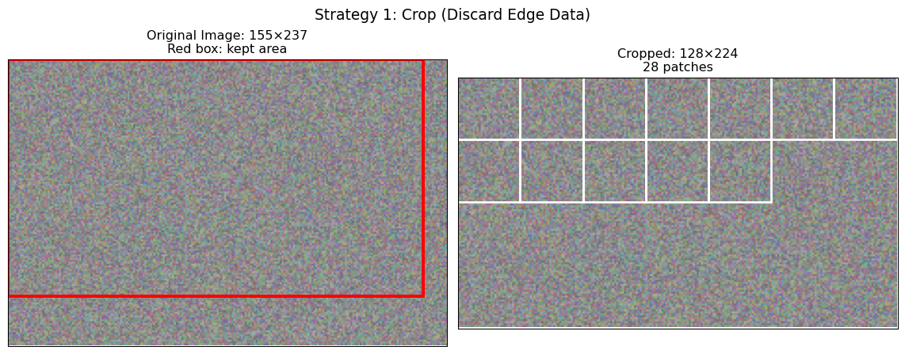
Crop Strategy Results:
Original: 155×237 = 36,735 pixels
Cropped: 128×224 = 28,672 pixels
Lost: 8,063 pixels (21.9%)
Patches: 28Strategy 2: Zero Padding
When to use: Complete coverage is essential, working with models robust to boundary artifacts, or when post-processing can handle padding effects.
def demonstrate_zero_padding(image, patch_size):
"""
Show zero padding strategy: extend image with zeros to fit complete patches.
"""
H, W, C = image.shape
# Calculate padding needed
pad_h = patch_size - (H % patch_size) if H % patch_size != 0 else 0
pad_w = patch_size - (W % patch_size) if W % patch_size != 0 else 0
# Apply zero padding
padded_img = np.pad(image, ((0, pad_h), (0, pad_w), (0, 0)),
mode='constant', constant_values=0)
# Extract patches
patches, positions = extract_patches_with_visualization(padded_img, patch_size)
# Visualize
fig, (ax1, ax2) = plt.subplots(1, 2, figsize=(12, 5))
# Original image
ax1.imshow(image[:, :, :3])
ax1.set_title(f'Original: {H}×{W}')
ax1.set_xticks([])
ax1.set_yticks([])
# Padded image with patches
ax2.imshow(padded_img[:, :, :3])
# Highlight padding areas
if pad_w > 0:
padding_rect = plt.Rectangle((W-0.5, -0.5), pad_w, H,
facecolor='red', alpha=0.3, edgecolor='red')
ax2.add_patch(padding_rect)
ax2.text(W + pad_w/2, H/2, 'Zero\nPadding', ha='center', va='center',
fontsize=10, color='red', weight='bold')
if pad_h > 0:
padding_rect = plt.Rectangle((-0.5, H-0.5), W + pad_w, pad_h,
facecolor='red', alpha=0.3, edgecolor='red')
ax2.add_patch(padding_rect)
ax2.text((W + pad_w)/2, H + pad_h/2, 'Zero Padding', ha='center', va='center',
fontsize=10, color='red', weight='bold')
# Show some patch boundaries
for x, y in positions[:15]: # First 15 patches
rect = plt.Rectangle((x-0.5, y-0.5), patch_size, patch_size,
linewidth=2, edgecolor='white', facecolor='none', alpha=0.7)
ax2.add_patch(rect)
ax2.set_xlim(0, padded_img.shape[1])
ax2.set_ylim(padded_img.shape[0], 0)
ax2.set_title(f'Padded: {padded_img.shape[0]}×{padded_img.shape[1]}\n{len(patches)} patches')
ax2.set_xticks([])
ax2.set_yticks([])
plt.suptitle('Strategy 2: Zero Padding', fontsize=14)
plt.tight_layout()
plt.show()
print(f"Zero Padding Results:")
print(f" Original: {H}×{W}")
print(f" Padding: +{pad_h} rows, +{pad_w} columns")
print(f" Padded: {padded_img.shape[0]}×{padded_img.shape[1]}")
print(f" Patches: {len(patches)}")
return padded_img, patches
padded_img, pad_patches = demonstrate_zero_padding(irregular_img, patch_size)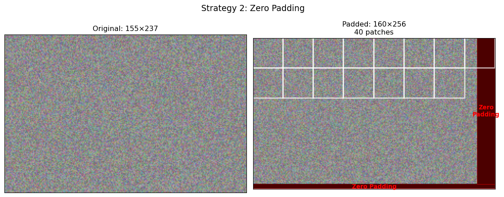
Zero Padding Results:
Original: 155×237
Padding: +5 rows, +19 columns
Padded: 160×256
Patches: 40Strategy 3: Reflect Padding
When to use: Image quality is critical, working with natural imagery where structure matters, or when models are sensitive to boundary artifacts.
def demonstrate_reflect_padding(image, patch_size):
"""
Show reflect padding: mirror edge pixels for natural boundaries.
"""
H, W, C = image.shape
# Calculate padding needed
pad_h = patch_size - (H % patch_size) if H % patch_size != 0 else 0
pad_w = patch_size - (W % patch_size) if W % patch_size != 0 else 0
# Apply reflection padding
padded_img = np.pad(image, ((0, pad_h), (0, pad_w), (0, 0)), mode='reflect')
# Extract patches
patches, positions = extract_patches_with_visualization(padded_img, patch_size)
# Visualize
fig, (ax1, ax2) = plt.subplots(1, 2, figsize=(12, 5))
# Original
ax1.imshow(image[:, :, :3])
ax1.set_title(f'Original: {H}×{W}')
ax1.set_xticks([])
ax1.set_yticks([])
# Padded with reflection highlighting
ax2.imshow(padded_img[:, :, :3])
# Draw boundary between original and reflected content
if pad_w > 0:
ax2.axvline(W-0.5, color='cyan', linewidth=3, alpha=0.8)
ax2.text(W + pad_w/2, H/2, 'Reflected\nContent', ha='center', va='center',
fontsize=10, color='cyan', weight='bold',
bbox=dict(boxstyle="round,pad=0.3", facecolor='white', alpha=0.8))
if pad_h > 0:
ax2.axhline(H-0.5, color='cyan', linewidth=3, alpha=0.8)
ax2.text((W + pad_w)/2, H + pad_h/2, 'Reflected Content', ha='center', va='center',
fontsize=10, color='cyan', weight='bold',
bbox=dict(boxstyle="round,pad=0.3", facecolor='white', alpha=0.8))
# Show patch boundaries
for x, y in positions[:15]:
rect = plt.Rectangle((x-0.5, y-0.5), patch_size, patch_size,
linewidth=2, edgecolor='yellow', facecolor='none', alpha=0.7)
ax2.add_patch(rect)
ax2.set_xlim(0, padded_img.shape[1])
ax2.set_ylim(padded_img.shape[0], 0)
ax2.set_title(f'Reflect Padded: {padded_img.shape[0]}×{padded_img.shape[1]}\n{len(patches)} patches')
ax2.set_xticks([])
ax2.set_yticks([])
plt.suptitle('Strategy 3: Reflect Padding (Preserves Structure)', fontsize=14)
plt.tight_layout()
plt.show()
print(f"Reflect Padding Results:")
print(f" Original: {H}×{W}")
print(f" Padding: +{pad_h} rows, +{pad_w} columns")
print(f" Padded: {padded_img.shape[0]}×{padded_img.shape[1]}")
print(f" Patches: {len(patches)}")
print(f" Note: Reflected content preserves local image structure")
return padded_img, patches
reflect_img, reflect_patches = demonstrate_reflect_padding(irregular_img, patch_size)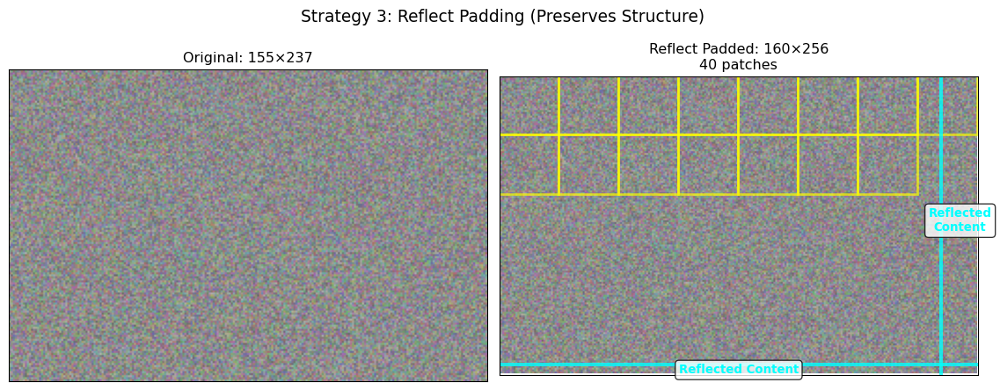
Reflect Padding Results:
Original: 155×237
Padding: +5 rows, +19 columns
Padded: 160×256
Patches: 40
Note: Reflected content preserves local image structureComparing Padding Strategies
Let’s quantitatively compare how these strategies affect the actual patch content:
def compare_padding_strategies():
"""
Compare the three padding strategies quantitatively.
"""
print("Padding Strategy Comparison")
print("="*60)
print(f"{'Strategy':<15} {'Patches':<8} {'Memory (MB)':<12} {'Edge Coverage':<15} {'Artifacts'}")
print("-"*60)
strategies = [
('Crop', crop_patches, 'Incomplete', 'None'),
('Zero Pad', pad_patches, 'Complete', 'Boundary jumps'),
('Reflect Pad', reflect_patches, 'Complete', 'Minimal')
]
for name, patches, coverage, artifacts in strategies:
memory_mb = patches.nbytes / (1024**2)
print(f"{name:<15} {len(patches):<8} {memory_mb:<12.1f} {coverage:<15} {artifacts}")
# Visual comparison of edge patches
fig, axes = plt.subplots(2, 3, figsize=(15, 10))
# Top row: show full padded images
images = [cropped_img, padded_img, reflect_img]
titles = ['Cropped', 'Zero Padded', 'Reflect Padded']
for i, (img, title) in enumerate(zip(images, titles)):
axes[0, i].imshow(img[:, :, :3])
axes[0, i].set_title(title)
axes[0, i].set_xticks([])
axes[0, i].set_yticks([])
# Bottom row: show edge patches that contain padding
patch_sets = [crop_patches, pad_patches, reflect_patches]
for i, (patches, title) in enumerate(zip(patch_sets, titles)):
if i == 0: # Crop strategy - show a regular patch
edge_patch = patches[-1] # Last patch (still contains real data)
axes[1, i].imshow(edge_patch[:, :, :3])
axes[1, i].set_title(f'{title}: Regular patch')
else: # Padding strategies - show patch with padding
edge_patch = patches[-1] # Last patch (contains padding)
axes[1, i].imshow(edge_patch[:, :, :3])
axes[1, i].set_title(f'{title}: Edge patch')
axes[1, i].set_xticks([])
axes[1, i].set_yticks([])
plt.suptitle('Padding Strategy Comparison: Full Images (top) and Edge Patches (bottom)',
fontsize=14)
plt.tight_layout()
plt.show()
compare_padding_strategies()
print("\n🎯 Strategy Selection Guidelines:")
print(" • CROP: Use for large-scale analysis where speed > completeness")
print(" • ZERO PAD: Use when complete coverage is mandatory")
print(" • REFLECT PAD: Use for high-quality analysis of natural imagery")
print(" • Consider your downstream task requirements")
print(" • Test different strategies on your specific data")Padding Strategy Comparison
============================================================
Strategy Patches Memory (MB) Edge Coverage Artifacts
------------------------------------------------------------
Crop 28 0.9 Incomplete None
Zero Pad 40 1.2 Complete Boundary jumps
Reflect Pad 40 1.2 Complete Minimal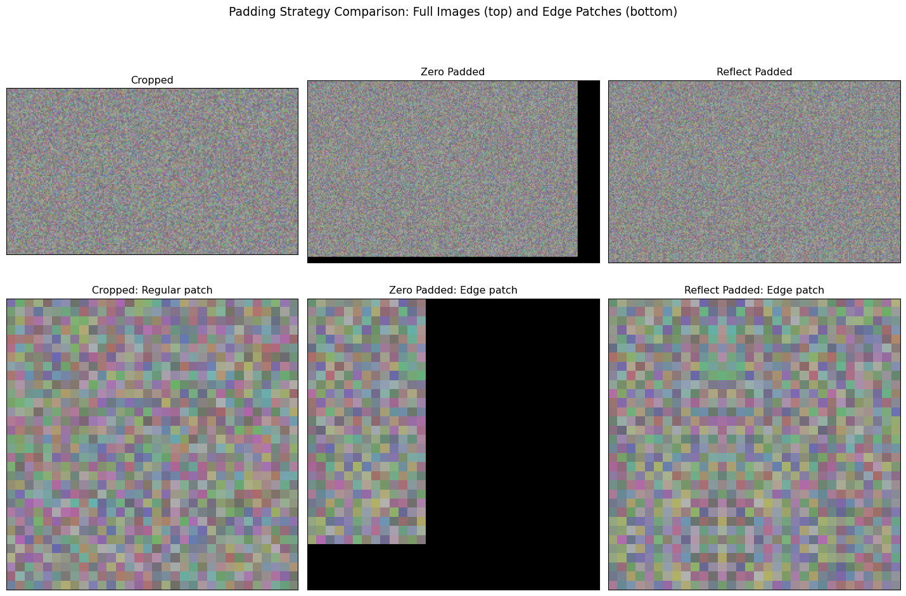
🎯 Strategy Selection Guidelines:
• CROP: Use for large-scale analysis where speed > completeness
• ZERO PAD: Use when complete coverage is mandatory
• REFLECT PAD: Use for high-quality analysis of natural imagery
• Consider your downstream task requirements
• Test different strategies on your specific dataAdvanced Topics: Multi-Scale and Multi-Temporal Processing
Multi-Scale Patch Extraction
Real-world satellite analysis often requires processing the same area at multiple scales. For example, identifying broad land cover patterns (large patches) while also detecting detailed features (small patches):
def multi_scale_patch_extraction(image, patch_sizes=[16, 32, 64]):
"""
Demonstrate multi-scale patch extraction for hierarchical analysis.
This approach is used in some advanced GFMs.
"""
print("Multi-Scale Analysis:")
print("="*40)
fig, axes = plt.subplots(1, len(patch_sizes), figsize=(15, 5))
for idx, patch_size in enumerate(patch_sizes):
patches, positions = extract_patches_with_visualization(image, patch_size)
# Calculate scale-dependent information
patches_per_area = len(patches) / (image.shape[0] * image.shape[1])
detail_level = 1000 * patches_per_area # Patches per 1000 pixels
print(f"Scale {idx+1}: {patch_size}×{patch_size} patches")
print(f" Total patches: {len(patches)}")
print(f" Detail level: {detail_level:.2f} patches/1000px²")
print(f" Use case: {'Fine details' if patch_size <= 32 else 'Broad patterns'}")
# Visualize
ax = axes[idx]
ax.imshow(image[:, :, [3, 0, 1]]) # False color
# Show subset of patches to avoid clutter
show_patches = positions[::max(1, len(positions)//12)] # Show ~12 patches
for x, y in show_patches:
rect = plt.Rectangle((x-0.5, y-0.5), patch_size, patch_size,
linewidth=2, edgecolor='white', facecolor='none', alpha=0.8)
ax.add_patch(rect)
ax.set_xlim(0, image.shape[1])
ax.set_ylim(image.shape[0], 0)
ax.set_xticks([])
ax.set_yticks([])
ax.set_title(f'{patch_size}×{patch_size}\n{len(patches)} patches')
plt.suptitle('Multi-Scale Patch Extraction', fontsize=14)
plt.tight_layout()
plt.show()
multi_scale_patch_extraction(satellite_img)
print("\n💡 Multi-Scale Benefits:")
print(" • Small patches: Capture fine details, textures, edges")
print(" • Large patches: Capture spatial context, broad patterns")
print(" • Combined: Enable hierarchical understanding")
print(" • Used in: Change detection, multi-resolution analysis")Multi-Scale Analysis:
========================================
Scale 1: 16×16 patches
Total patches: 77
Detail level: 3.56 patches/1000px²
Use case: Fine details
Scale 2: 32×32 patches
Total patches: 15
Detail level: 0.69 patches/1000px²
Use case: Fine details
Scale 3: 64×64 patches
Total patches: 2
Detail level: 0.09 patches/1000px²
Use case: Broad patterns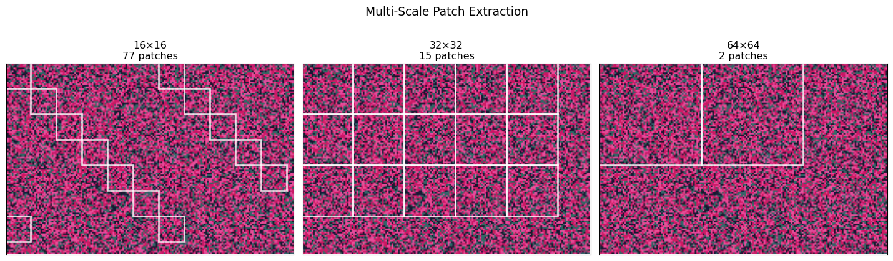
💡 Multi-Scale Benefits:
• Small patches: Capture fine details, textures, edges
• Large patches: Capture spatial context, broad patterns
• Combined: Enable hierarchical understanding
• Used in: Change detection, multi-resolution analysisMulti-Temporal Patch Processing
Many GFMs process time series of satellite imagery. Here’s how patch extraction works across time:
def demonstrate_temporal_patches():
"""
Show how patches are extracted from multi-temporal imagery.
Critical for change detection and phenology monitoring.
"""
# Simulate time series (3 dates)
np.random.seed(42)
dates = ['2021-06-01', '2022-06-01', '2023-06-01']
# Create temporal changes (simulate seasonal/land use changes)
temporal_images = []
base_img = satellite_img.copy()
for i, date in enumerate(dates):
# Simulate temporal changes
temp_img = base_img.copy()
# Simulate seasonal vegetation changes (NIR band changes)
vegetation_change = np.sin(i * np.pi / 2) * 0.3 # Seasonal variation
temp_img[:, :, 3] = np.clip(temp_img[:, :, 3] + vegetation_change, 0, 1)
# Simulate some land cover change in a region
if i > 0: # Changes start from second date
change_region = slice(40, 80), slice(60, 100)
temp_img[change_region] = [0.2, 0.3, 0.4, 0.1] # Urban development
temporal_images.append(temp_img)
# Extract patches from each time point
patch_size = 40
temporal_patch_sets = []
fig, axes = plt.subplots(2, 3, figsize=(15, 10))
for i, (img, date) in enumerate(zip(temporal_images, dates)):
patches, positions = extract_patches_with_visualization(img, patch_size)
temporal_patch_sets.append(patches)
# Show full image
axes[0, i].imshow(img[:, :, [3, 0, 1]]) # False color
axes[0, i].set_title(f'{date}\n{len(patches)} patches')
axes[0, i].set_xticks([])
axes[0, i].set_yticks([])
# Highlight a specific patch across time
highlight_patch_idx = 6 # Same spatial location across all dates
x, y = positions[highlight_patch_idx]
rect = plt.Rectangle((x-0.5, y-0.5), patch_size, patch_size,
linewidth=3, edgecolor='yellow', facecolor='none')
axes[0, i].add_patch(rect)
# Show the highlighted patch
highlighted_patch = patches[highlight_patch_idx]
axes[1, i].imshow(highlighted_patch[:, :, [3, 0, 1]])
axes[1, i].set_title(f'Patch {highlight_patch_idx}\n{date}')
axes[1, i].set_xticks([])
axes[1, i].set_yticks([])
plt.suptitle('Multi-Temporal Patch Extraction (Same Spatial Location Over Time)', fontsize=14)
plt.tight_layout()
plt.show()
# Analyze temporal patch consistency
print("Temporal Patch Analysis:")
print("="*30)
print(f"Patch size: {patch_size}×{patch_size}")
print(f"Time points: {len(dates)}")
print(f"Patches per date: {len(temporal_patch_sets[0])}")
# Calculate change magnitude for the highlighted patch
patch_0 = temporal_patch_sets[0][highlight_patch_idx]
patch_1 = temporal_patch_sets[1][highlight_patch_idx]
patch_2 = temporal_patch_sets[2][highlight_patch_idx]
change_1 = np.mean(np.abs(patch_1 - patch_0))
change_2 = np.mean(np.abs(patch_2 - patch_1))
print(f"\nChange Analysis (Patch {highlight_patch_idx}):")
print(f" {dates[0]} → {dates[1]}: {change_1:.3f} mean absolute change")
print(f" {dates[1]} → {dates[2]}: {change_2:.3f} mean absolute change")
return temporal_patch_sets
temporal_patches = demonstrate_temporal_patches()
print("\n🕐 Temporal Processing Insights:")
print(" • Same spatial patches tracked over time")
print(" • Enables change detection and trend analysis")
print(" • Requires careful image registration (alignment)")
print(" • Used in: Crop monitoring, deforestation detection, urban growth")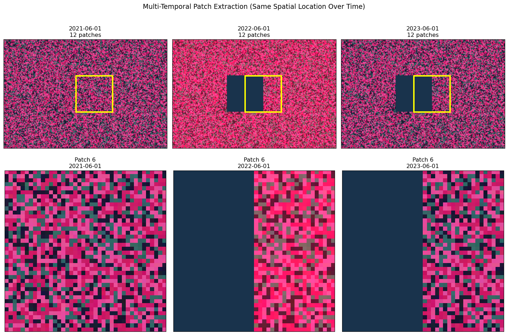
Temporal Patch Analysis:
==============================
Patch size: 40×40
Time points: 3
Patches per date: 12
Change Analysis (Patch 6):
2021-06-01 → 2022-06-01: 0.141 mean absolute change
2022-06-01 → 2023-06-01: 0.027 mean absolute change
🕐 Temporal Processing Insights:
• Same spatial patches tracked over time
• Enables change detection and trend analysis
• Requires careful image registration (alignment)
• Used in: Crop monitoring, deforestation detection, urban growthConnection to Foundation Model Architectures
How Different GFMs Handle Patches
Different geospatial foundation models make different choices about patch processing. Let’s examine some real examples:
def compare_gfm_architectures():
"""
Compare patch handling across different geospatial foundation models.
"""
gfm_configs = {
'Prithvi (IBM)': {
'patch_size': 16,
'bands': 6, # HLS bands
'embed_dim': 768,
'use_case': 'Multi-spectral analysis',
'notes': 'Pre-trained on HLS (Landsat + Sentinel-2)'
},
'SatMAE (Microsoft)': {
'patch_size': 16,
'bands': 4, # RGB + NIR
'embed_dim': 1024,
'use_case': 'Self-supervised pretraining',
'notes': 'Masked autoencoder approach'
},
'Scale-MAE': {
'patch_size': 8,
'bands': 10, # Sentinel-2 bands
'embed_dim': 512,
'use_case': 'Multi-scale analysis',
'notes': 'Handles multiple resolutions'
},
'Our Custom GFM': {
'patch_size': 32,
'bands': 4,
'embed_dim': 256,
'use_case': 'Tutorial example',
'notes': 'Designed for this course'
}
}
print("Geospatial Foundation Model Architectures")
print("="*60)
print(f"{'Model':<20} {'Patch':<8} {'Bands':<6} {'Embed':<8} {'Use Case'}")
print("-"*60)
for model, config in gfm_configs.items():
patch_str = f"{config['patch_size']}×{config['patch_size']}"
print(f"{model:<20} {patch_str:<8} {config['bands']:<6} {config['embed_dim']:<8} {config['use_case']}")
# Calculate tokens per image for each model
print(f"\nTokens per Landsat Scene (7791×7611 pixels):")
print("-"*50)
landsat_h, landsat_w = 7791, 7611
for model, config in gfm_configs.items():
patch_size = config['patch_size']
patches_y = landsat_h // patch_size
patches_x = landsat_w // patch_size
total_tokens = patches_y * patches_x
print(f"{model:<20}: {total_tokens:>8,} tokens")
# Visualize patch sizes
fig, axes = plt.subplots(1, 4, figsize=(16, 4))
models = list(gfm_configs.keys())
for idx, model in enumerate(models):
config = gfm_configs[model]
patch_size = config['patch_size']
# Create a sample image region
sample_size = 128
sample_img = satellite_img[:sample_size, :sample_size, [0, 1, 2]]
ax = axes[idx]
ax.imshow(sample_img)
# Draw patch grid
for x in range(0, sample_size, patch_size):
for y in range(0, sample_size, patch_size):
if x + patch_size <= sample_size and y + patch_size <= sample_size:
rect = plt.Rectangle((x-0.5, y-0.5), patch_size, patch_size,
linewidth=2, edgecolor='white', facecolor='none')
ax.add_patch(rect)
ax.set_xlim(0, sample_size)
ax.set_ylim(sample_size, 0)
ax.set_xticks([])
ax.set_yticks([])
ax.set_title(f'{model}\n{patch_size}×{patch_size} patches')
plt.suptitle('Patch Sizes in Different GFMs', fontsize=14)
plt.tight_layout()
plt.show()
compare_gfm_architectures()Geospatial Foundation Model Architectures
============================================================
Model Patch Bands Embed Use Case
------------------------------------------------------------
Prithvi (IBM) 16×16 6 768 Multi-spectral analysis
SatMAE (Microsoft) 16×16 4 1024 Self-supervised pretraining
Scale-MAE 8×8 10 512 Multi-scale analysis
Our Custom GFM 32×32 4 256 Tutorial example
Tokens per Landsat Scene (7791×7611 pixels):
--------------------------------------------------
Prithvi (IBM) : 230,850 tokens
SatMAE (Microsoft) : 230,850 tokens
Scale-MAE : 925,323 tokens
Our Custom GFM : 57,591 tokens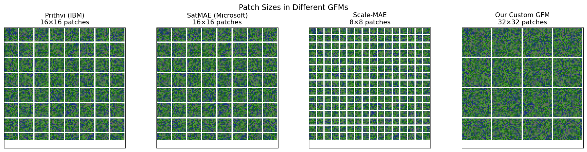
Masked Autoencoder Training
Many modern GFMs use masked autoencoder (MAE) training. Let’s demonstrate how masking works with patches:
def demonstrate_mae_masking(patches, mask_ratio=0.75):
"""
Show how masked autoencoder training works with satellite image patches.
This is the core training strategy for many modern GFMs.
"""
n_patches = len(patches)
n_masked = int(n_patches * mask_ratio)
print("Masked Autoencoder (MAE) Training")
print("="*40)
print(f"Total patches: {n_patches}")
print(f"Mask ratio: {mask_ratio} ({n_masked}/{n_patches} patches masked)")
print(f"Visible patches: {n_patches - n_masked}")
# Create random mask
np.random.seed(42)
mask_indices = np.random.choice(n_patches, n_masked, replace=False)
# Reconstruct image grid for visualization
grid_size = int(np.ceil(np.sqrt(n_patches)))
# Infer patch size and handle channel ordering robustly when visualizing
patch = patches[0]
if patch.ndim == 3 and patch.shape[-1] >= 3:
patch_size = patch.shape[0]
elif patch.ndim == 3 and patch.shape[0] >= 3:
patch_size = patch.shape[1]
else:
patch_size = patches.shape[1]
# Create full image from patches
full_img = np.zeros((grid_size * patch_size, grid_size * patch_size, 3))
masked_img = full_img.copy()
for i in range(n_patches):
row = i // grid_size
col = i % grid_size
start_y = row * patch_size
end_y = start_y + patch_size
start_x = col * patch_size
end_x = start_x + patch_size
# Extract an RGB visualization with channels-last ordering
patch_i = patches[i]
if patch_i.ndim == 3 and patch_i.shape[-1] >= 3:
patch_rgb = patch_i[..., :3]
elif patch_i.ndim == 3 and patch_i.shape[0] >= 3:
patch_rgb = np.transpose(patch_i[:3, ...], (1, 2, 0))
else:
# Fallback for single-channel patches: replicate to 3 channels
if patch_i.ndim == 3 and patch_i.shape[-1] == 1:
patch_rgb = np.repeat(patch_i, 3, axis=-1)
elif patch_i.ndim == 3 and patch_i.shape[0] == 1:
patch_rgb = np.repeat(np.transpose(patch_i, (1, 2, 0)), 3, axis=-1)
else:
# Last resort: ensure shape (H, W, 3)
h = patch_i.shape[0]
w = patch_i.shape[1]
patch_rgb = np.zeros((h, w, 3))
full_img[start_y:end_y, start_x:end_x] = patch_rgb
# Mask selected patches
if i not in mask_indices:
masked_img[start_y:end_y, start_x:end_x] = patch_rgb
# Visualize MAE process
fig, (ax1, ax2, ax3) = plt.subplots(1, 3, figsize=(15, 5))
# Original image
ax1.imshow(full_img)
ax1.set_title('Original Image')
ax1.set_xticks([])
ax1.set_yticks([])
# Masked image (input to encoder)
ax2.imshow(masked_img)
ax2.set_title(f'Masked Input\n({100*(1-mask_ratio):.0f}% visible)')
ax2.set_xticks([])
ax2.set_yticks([])
# Highlight masked regions
reconstruction_img = full_img.copy()
for i in range(n_patches):
if i in mask_indices:
row = i // grid_size
col = i % grid_size
start_y = row * patch_size
end_y = start_y + patch_size
start_x = col * patch_size
end_x = start_x + patch_size
# Add red tint to show what needs reconstruction
reconstruction_img[start_y:end_y, start_x:end_x, 0] = np.minimum(
reconstruction_img[start_y:end_y, start_x:end_x, 0] + 0.3, 1.0)
ax3.imshow(reconstruction_img)
ax3.set_title('Reconstruction Target\n(Red = masked patches)')
ax3.set_xticks([])
ax3.set_yticks([])
plt.suptitle('Masked Autoencoder Training Process', fontsize=14)
plt.tight_layout()
plt.show()
print(f"\n🎯 MAE Training Process:")
print(f" 1. Randomly mask {mask_ratio:.0%} of patches")
print(f" 2. Encoder processes only visible patches")
print(f" 3. Decoder reconstructs all patches")
print(f" 4. Loss computed only on masked patches")
print(f" 5. Model learns spatial relationships and context")
return mask_indices
mask_indices = demonstrate_mae_masking(patches)
print("\n🔍 Why MAE Works for Satellite Imagery:")
print(" • Forces model to understand spatial context")
print(" • Learns spectral relationships between bands")
print(" • Captures seasonal and phenological patterns")
print(" • Creates transferable representations")
print(" • Reduces need for labeled training data")Masked Autoencoder (MAE) Training
========================================
Total patches: 24
Mask ratio: 0.75 (18/24 patches masked)
Visible patches: 6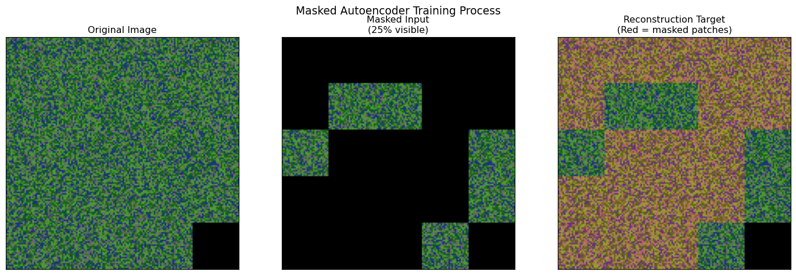
🎯 MAE Training Process:
1. Randomly mask 75% of patches
2. Encoder processes only visible patches
3. Decoder reconstructs all patches
4. Loss computed only on masked patches
5. Model learns spatial relationships and context
🔍 Why MAE Works for Satellite Imagery:
• Forces model to understand spatial context
• Learns spectral relationships between bands
• Captures seasonal and phenological patterns
• Creates transferable representations
• Reduces need for labeled training dataPerformance Optimization and Practical Considerations
Memory-Efficient Batch Processing
When working with large satellite images, you need efficient strategies for processing patches in batches:
def demonstrate_efficient_processing():
"""
Show memory-efficient strategies for processing large numbers of patches.
"""
# Simulate a large satellite image
large_img_shape = (2000, 3000, 6) # Realistic size
patch_size = 64
# Calculate patch requirements
patches_y = large_img_shape[0] // patch_size
patches_x = large_img_shape[1] // patch_size
total_patches = patches_y * patches_x
# Memory calculations
patch_memory_bytes = patch_size * patch_size * large_img_shape[2] * 4 # float32
total_patch_memory_gb = (total_patches * patch_memory_bytes) / (1024**3)
print("Large-Scale Processing Analysis")
print("="*40)
print(f"Image size: {large_img_shape[0]}×{large_img_shape[1]}×{large_img_shape[2]}")
print(f"Patch size: {patch_size}×{patch_size}")
print(f"Total patches: {total_patches:,}")
print(f"Memory per patch: {patch_memory_bytes/1024:.1f} KB")
print(f"Total patch memory: {total_patch_memory_gb:.2f} GB")
# Batch processing scenarios
gpu_memory_gb = 16 # Typical GPU
model_memory_gb = 4 # Reserve for model weights
available_memory_gb = gpu_memory_gb - model_memory_gb
max_patches_per_batch = int((available_memory_gb * 1024**3) / patch_memory_bytes)
n_batches = (total_patches + max_patches_per_batch - 1) // max_patches_per_batch
print(f"\nBatch Processing Strategy:")
print(f" GPU memory: {gpu_memory_gb} GB")
print(f" Model memory: {model_memory_gb} GB")
print(f" Available: {available_memory_gb} GB")
print(f" Max patches/batch: {max_patches_per_batch:,}")
print(f" Batches needed: {n_batches}")
# Show different batch size trade-offs
batch_sizes = [64, 128, 256, 512, 1024]
print(f"\nBatch Size Trade-offs:")
print(f"{'Batch Size':<12} {'Batches':<8} {'Memory (GB)':<12} {'Efficiency'}")
print("-"*50)
for batch_size in batch_sizes:
if batch_size <= max_patches_per_batch:
n_batches = (total_patches + batch_size - 1) // batch_size
memory_gb = (batch_size * patch_memory_bytes) / (1024**3)
efficiency = "Optimal" if batch_size == max_patches_per_batch else "Good"
else:
n_batches = "OOM" # Out of memory
memory_gb = (batch_size * patch_memory_bytes) / (1024**3)
efficiency = "Too large"
print(f"{batch_size:<12} {n_batches:<8} {memory_gb:<12.2f} {efficiency}")
return max_patches_per_batch
optimal_batch_size = demonstrate_efficient_processing()Large-Scale Processing Analysis
========================================
Image size: 2000×3000×6
Patch size: 64×64
Total patches: 1,426
Memory per patch: 96.0 KB
Total patch memory: 0.13 GB
Batch Processing Strategy:
GPU memory: 16 GB
Model memory: 4 GB
Available: 12 GB
Max patches/batch: 131,072
Batches needed: 1
Batch Size Trade-offs:
Batch Size Batches Memory (GB) Efficiency
--------------------------------------------------
64 23 0.01 Good
128 12 0.01 Good
256 6 0.02 Good
512 3 0.05 Good
1024 2 0.09 GoodReal-World Pipeline Implementation
Let’s put it all together with a realistic implementation that you might use in practice:
def create_production_pipeline():
"""
Demonstrate a production-ready patch extraction pipeline
with all the considerations we've discussed.
"""
class SatelliteImageProcessor:
def __init__(self, patch_size=32, stride=None, padding='reflect',
batch_size=256, overlap_threshold=0.5):
self.patch_size = patch_size
self.stride = stride if stride else patch_size
self.padding = padding
self.batch_size = batch_size
self.overlap_threshold = overlap_threshold
def extract_patches(self, image):
"""Extract patches with specified strategy."""
H, W, C = image.shape
# Apply padding if needed
if self.padding == 'reflect':
pad_h = self.patch_size - (H % self.patch_size) if H % self.patch_size != 0 else 0
pad_w = self.patch_size - (W % self.patch_size) if W % self.patch_size != 0 else 0
if pad_h > 0 or pad_w > 0:
image = np.pad(image, ((0, pad_h), (0, pad_w), (0, 0)), mode='reflect')
elif self.padding == 'crop':
crop_h = (H // self.patch_size) * self.patch_size
crop_w = (W // self.patch_size) * self.patch_size
image = image[:crop_h, :crop_w, :]
# Extract patches
patches = []
positions = []
H_new, W_new = image.shape[:2]
for y in range(0, H_new - self.patch_size + 1, self.stride):
for x in range(0, W_new - self.patch_size + 1, self.stride):
patch = image[y:y+self.patch_size, x:x+self.patch_size, :]
patches.append(patch)
positions.append((x, y))
return np.array(patches), positions, image.shape
def process_in_batches(self, patches, processing_func):
"""Process patches in memory-efficient batches."""
results = []
n_patches = len(patches)
for i in range(0, n_patches, self.batch_size):
batch_end = min(i + self.batch_size, n_patches)
batch = patches[i:batch_end]
# Simulate processing (could be model inference)
batch_results = processing_func(batch)
results.extend(batch_results)
print(f"Processed batch {i//self.batch_size + 1}/{(n_patches + self.batch_size - 1)//self.batch_size}")
return results
# Demonstrate the pipeline
processor = SatelliteImageProcessor(
patch_size=32,
stride=24, # 25% overlap
padding='reflect',
batch_size=64
)
print("Production Pipeline Demonstration")
print("="*40)
# Extract patches
patches, positions, processed_shape = processor.extract_patches(satellite_img)
print(f"Input image: {satellite_img.shape}")
print(f"Processed image: {processed_shape}")
print(f"Patches extracted: {len(patches)}")
print(f"Patch overlap: {100*(processor.patch_size - processor.stride)/processor.patch_size:.0f}%")
# Simulate processing function (could be model inference)
def mock_processing(batch):
"""Simulate model inference or feature extraction."""
# Return mean spectral values per patch as example
return [np.mean(patch, axis=(0, 1)) for patch in batch]
# Process in batches
print(f"\nProcessing {len(patches)} patches in batches of {processor.batch_size}...")
results = processor.process_in_batches(patches, mock_processing)
print(f"Processing complete!")
print(f"Results shape: {np.array(results).shape}")
# Visualize results (spectral signatures)
results_array = np.array(results)
fig, (ax1, ax2) = plt.subplots(1, 2, figsize=(12, 5))
# Show patch locations colored by first spectral band average
x_coords = [pos[0] + processor.patch_size//2 for pos in positions]
y_coords = [pos[1] + processor.patch_size//2 for pos in positions]
scatter = ax1.scatter(x_coords, y_coords, c=results_array[:, 0],
cmap='viridis', s=50, alpha=0.7)
ax1.set_xlim(0, satellite_img.shape[1])
ax1.set_ylim(satellite_img.shape[0], 0)
ax1.set_title('Patch Results (Red Band Average)')
ax1.set_xlabel('X Coordinate')
ax1.set_ylabel('Y Coordinate')
plt.colorbar(scatter, ax=ax1)
# Show spectral signatures distribution
band_names = ['Red', 'Green', 'Blue', 'NIR']
for i, band in enumerate(band_names):
ax2.hist(results_array[:, i], bins=20, alpha=0.6, label=band)
ax2.set_xlabel('Average Band Value')
ax2.set_ylabel('Frequency')
ax2.set_title('Distribution of Spectral Values Across Patches')
ax2.legend()
ax2.grid(True, alpha=0.3)
plt.tight_layout()
plt.show()
return processor, results
pipeline, processing_results = create_production_pipeline()Production Pipeline Demonstration
========================================
Input image: (120, 180, 4)
Processed image: (128, 192, 4)
Patches extracted: 35
Patch overlap: 25%
Processing 35 patches in batches of 64...
Processed batch 1/1
Processing complete!
Results shape: (35, 4)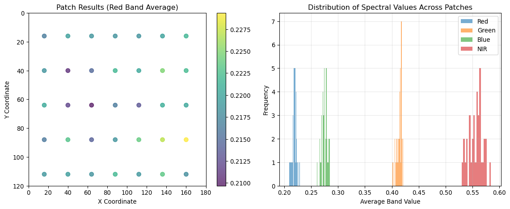
Key Takeaways and Best Practices
After working through these examples, here are the essential principles for effective patch extraction in geospatial foundation models:
1. Understand Your Memory Constraints
- Calculate patch memory requirements before processing
- Use batch processing for large images
- Consider GPU memory limitations in your pipeline design
2. Choose Patch Size Strategically
- Small patches (8-16px): Capture fine details, more patches, higher memory
- Medium patches (32-64px): Balance detail and context, most common choice
- Large patches (128px+): Capture broad context, fewer patches, less memory
3. Select Padding Strategy Based on Your Use Case
- Crop: Speed-critical applications, overlapping patches
- Zero padding: Complete coverage required, simple implementation
- Reflect padding: Image quality critical, natural imagery
4. Consider Overlap for Better Performance
- No overlap: Fastest processing, good for classification
- 25-50% overlap: Better boundary handling, moderate cost increase
- 75%+ overlap: Maximum context, highest computational cost
5. Plan for Multi-Scale and Multi-Temporal Processing
- Design pipelines that can handle different patch sizes
- Ensure spatial alignment across time series
- Consider temporal consistency in patch extraction
6. Optimize for Your Specific GFM Architecture
- Match patch sizes to your model’s training configuration
- Consider spectral band requirements
- Plan for masked autoencoder training if applicable
Summary
Patch extraction is far more than a simple preprocessing step—it’s a critical design choice that affects every aspect of your geospatial AI pipeline. The strategies we’ve explored provide a foundation for making informed decisions about:
- Memory management and computational efficiency
- Information preservation vs. processing speed trade-offs
- Spatial context and boundary handling
- Multi-scale and temporal processing requirements
- Model architecture compatibility
As you develop your own geospatial foundation models, remember that the “best” patch extraction strategy depends entirely on your specific use case, data characteristics, and computational constraints. Use these examples as starting points, but always validate your choices with your own data and requirements.
The techniques demonstrated here form the foundation for the more advanced topics we’ll explore in subsequent chapters, including attention mechanisms, self-supervised learning, and model deployment at scale.